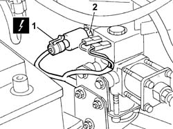
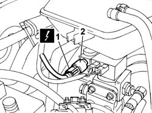

1058A44 CNG/FUEL SWITCH - R R
- Path
- Procedures > 10 ENGINE UNIT > 1058 GAS CIRCUIT > 1058A GAS CIRCUIT MULTI POINT INJECTION > 1058A44 CNG/FUEL SWITCH - R R
- Kind
- repair procedure (removal / refitting; the operation number is the code)
- Applies to
- engines: 2.0 16V; all production periods
- Interactive page
- https://sloeber94.github.io/elrnDB-fDct/en/#/244000819
Applies to: engines: 2.0 16V; all production periods
 Removing
Removing
 Refitting
RefittingDisconnect the negative battery terminal.
Close the manual methane cut-off valves on the cylinder unit.
Applies to: engines: 2.0 16V; production: fino a 02/05
1. Disconnect the electrical connection frrom the pressure sensor.
Description | Connector | |
|---|---|---|
1 | Methane pressure sensor | K054 |
2. Undo the pressure sensor from the pressure reduction unit and remove.

Applies to: engines: 2.0 16V; production: da 03/05
1. Disconnect the electrical connection frrom the pressure sensor.
Description | Connector | |
|---|---|---|
1 | Methane pressure sensor | K054 |
2. Undo the pressure sensor from the pressure reduction unit and remove.

Applies to: engines: 2.0 16V; all production periods
Refitting
RemovingFit the CNG pressure sensor and tighten.
Connect the CNG pressure sensor electrical connector.
Description | Connector | |
|---|---|---|
- | Methane pressure sensor | K054 |
Move the CNG cut-off solenoids to open position by hand and check system is efficient.
Connect the negative battery terminal.